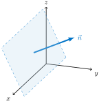
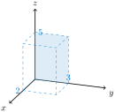
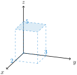
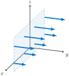
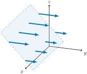
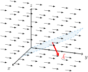
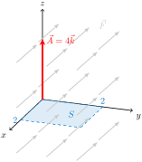
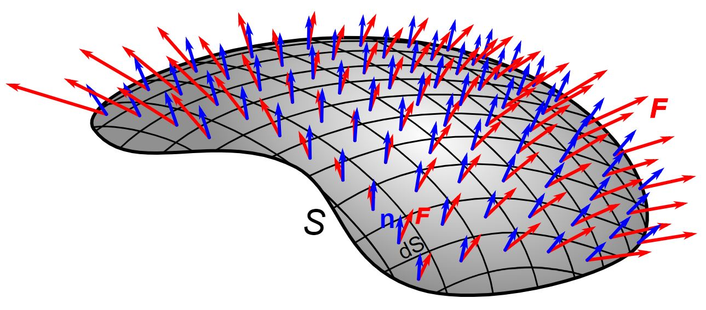

Since a change in heat \(\Delta q\) is measured in joules, time over which a transfer occurs is measured in seconds, and the area of the surface through which the heat transfers is measured in square meters, the units of heat flux are \(J \cdot m^{-2} \cdot s^{-1}\text{.}\)
Checkpoint6.4.2.What? A Watt?
A watt is a unit of power defined as one joule per second (\(J \cdot s^{-1}\)). What are units of heat flux in terms of watts rather than joules?
Answer.
Heat flux can be measured as watts per square meter, \(W \cdot m^{-2}\text{,}\) since
The latent heat flux, \(LE\text{,}\) at a lake surface quantifies the energy lost or gained to the lake via a state change from liquid water to vapor (evaporation) or vapor to liquid (condensation). Most latent heat exchange occurs as evaporation. The magnitude of the flux depends on the deficit of vapor in the air and the efficiency of removal, which is based on atmospheric conditions above the lake. Figure 6.4.4 shows the latent heat flux in the Great Lakes during the month of January, during which this flux is greatest over most areas. This is due, in part, to the low absolute humidity of the cold overlying air. Winter winds and instability of the atmospheric boundary layer further enhance latent heat flux in January.
By July each year, the area of active evaporation spreads from the shorelines toward the deeper areas at the centers of the lakes. Lake Superior, the northernmost and deepest of the Great Lakes, warms more slowly than the other lakes, and thus has the least latent heat flux throughout the summer.
Example6.4.6.Sensible Heat Flux in the Great Lakes.
The sensible heat flux, \(H\text{,}\) constrasts with latent heat flux in that no state change occurs and energy is transferred via conduction between the lake surface and the atmosphere. The magnitude of sensible heat flux depends on the difference in temperature between air and water and the atmospheric removal. Figure 6.4.7 shows the sensible heat flux in the Great Lakes during the winter month of January, during which this flux is greatest over deeper parts of the lakes.
Once again, sensible heat flux in the month of July is much less. In fact, sensible heat flux values are negative, indicating that the water surface is colder than the overlying air.
The net heat flux \(Q\) adds the influence of solar radiation to the sensible and latent heat fluxes. In particular, we have
\begin{gather*}
Q = R_s + R_{dl} - R_{ul} - LE - H
\end{gather*}
where \(R_s\) is the absorbed solar (shortwave) radiation, \(R_{dl}\) is the downward longwave radiation from the atmosphere and clouds, \(R_{ul}\) is the upward longwave radiation from the lake surface, and once again \(LE\) is the latent heat flux and \(H\) is the sensible heat flux.
Based on Figure 6.4.10, one might worry about the net negative heat flux \(Q\) in the Great Lakes during January. However, net fluxes are negative during the winter and positive during the summer (see Figure 6.4.11). Moreover, net heat flux is near zero on the surface of the Great Lakes when averaged over a typical year.
where \(\epsilon\) is the emissivity of the water surface, \(\sigma\) is the Stefan-Boltzmann constant (\(5.67 \times 10^{-8} \ \frac{W}{m^2 \cdot K^4}\)), and \(T_w\) is the water surface temperature (measured in degrees Kelvin). Assume that Lake Superior has an emissivity constant of \(\epsilon=0.97\text{.}\) Calculate the upward longwave radiation (a flux) for both an average high surface water temperature of \(17^{\circ}C\) during September and the average low surface water temperature of \(1^{\circ}C\) during March.
Answer.
Since \(17^{\circ}C = 290.15^{\circ}K\text{,}\) we have
Heat flux, the transfer of heat across a surface such as that of a lake over time, is only one type of flux for which we have interest.
Definition6.4.13.Flux.
A flux is the transfer of some variable per unit area per unit time.
Some variables for which we are interested in flux include heat, mass, kinetic energy, moisture, momentum, and pollution.
Example6.4.14.Units of Flux.
We have already seen that heat flux has SI units of Joules (units of heat) per square meter (units of area) per second (units of time). That is, the SI units of heat flux are \(\displaystyle \frac{J}{m^2 \cdot s}\) or, since one watt is defined as one joule per second, \(\displaystyle \frac{W}{s}\text{.}\) Similarly, the SI units for mass flux are kilograms (units of mass) per square meter (units of area) per second (units of time). That is, \(\displaystyle \frac{kg}{m^2 \cdot s}\text{.}\)
Checkpoint6.4.15.Units of Momentum Flux.
Determine the units of momentum flux. Hint: Momentum has SI units of mass times velocity (i.e. \(\displaystyle \frac{kg \cdot m}{s}\)).
Answer.
\(\displaystyle \frac{kg}{m \cdot s^2}\)
The kinematic form of flux is found by dividing a given flux by the density of air.
Example6.4.16.Kinematic Mass Flux.
Kinematic mass flux has units of \(\displaystyle \frac{kg}{m^2 \cdot s} \cdot \frac{1}{kg/m^3} = \frac{m}{s}\text{.}\)
Example6.4.17.Kinematic Moisture Flux.
Kinematic moisture flux has units of \(\displaystyle \frac{kg_{water}}{m^2 \cdot s} \cdot \frac{1}{kg_{air}/m^3} = \frac{kg_{water} \cdot m}{kg_{air} \cdot s}\text{.}\)
Kinematic fluxes are more closely related to meteorological variables that can be easily measured (such as temperature and wind) than are the associated dynamic fluxes.
The mass flux of air is 1 \(\displaystyle \frac{kg}{m^2 \cdot s}\) through a door opening that is 1\(m\) wide by 2.5\(m\) tall. So the amount of air passing through the door each minute can be found by multiplying this mass flux by the area of the door and by the time (in seconds) for which the air passes. That is, since \(\text{flux} = \frac{\text{mass}}{\text{unit area} \cdot \text{unit time}}\text{,}\) we have
Since the density of air at sea-level is \(\rho = 1.225 \text{ } kg/m^3\text{,}\) the kinematic mass flux is \((1 \text{ }\frac{kg}{m^2 \cdot s}) \cdot \frac{1}{1.225 \text{ } kg/m^3} = 0.82 \text{ }\frac{m}{s}\text{.}\) Using kinematic mass flux, we see that \((0.82\frac{m}{s})(2.5m^2)(60s) = 123 m^3\) of air flow through the door each minute.
Before mathematically defining flux, we need to have a way of specifying the direction by which we are defining positive flux through a given surface. Most surfaces are orientable. This means they have two sides (yes, there are examples such as the Mobius strip or the Klein bottle that do not). At each point on a given side of the surface, we can construct a unit normal vector (see Figure 6.4.20). Choosing an orientation for a surface means picking one of these unit normal vectors at each point in a continuous way. Once this has been done, we use the notation \(\vec{n}\) to denote a unit normal vector in the direction of orientation.

Figure6.4.20.A surface having two possible orientations. By specifying the unit normal vector \(\vec{n}\) shown, orientation is positive in that direction. If a fluid were to flow from left to right (roughly towards the positive \(y\)-axis), then the flux through this surface would be considered positive. If the other unit normal, pointing into the page, were chosen for this surface, then flux for the same flow would be negative.
Definition6.4.21.Area Vector.
For an orientable surface having finite area \(A\text{,}\) we define the area vector \(\vec{A}\) for this surface to be \(\vec{A}=A\vec{n}\) where \(\vec{n}\) is the unit normal defining the orientation of the surface.
Example6.4.22.Area Vector for Back of a Prism.
Consider a 2m by 3m by 5m prism placed in the positive orthant with one corner at the origin (see Figure 6.4.23) that is outward oriented. The area vector for the back surface of this prism would be \(\vec{A} = -15\vec{i}\) since the area of the surface is 15 and the unit vector defining positive orientation for the surface is \(-\vec{i}\text{.}\)

Figure6.4.23.Back of a 2m by 3m by 5m prism.
Checkpoint6.4.24.Area Vector for Top of a Prism.
Determine the area vector \(\vec{A}\) for the top of a 2m by 3m by 5m prism placed in the positive orthant with one corner at the origin (see Figure 6.4.25) that is outward oriented.

Figure6.4.25.Top of a 2m by 3m by 5m prism.
Answer.
\(\vec{A} = 6\vec{k}\)
We now turn our attention to understanding flux through a surface in the presence of a vector field \(\vec{F}\) representing flow. Imagine a rectangular screen immersed in a river that is flowing in the positive \(y\)-direction; that is, left to right (see Figure 6.4.26 and Figure 6.4.27). The velocity of the water at each point is represented by the vectors in these diagrams.

Figure6.4.26.Water flow from vector field \(\vec{F}\) flowing in positive \(y\)-direction through a vertical screen.

Figure6.4.27.Water flow from vector field \(\vec{F}\) flowing in positive \(y\)-direction through a slanted screen.
One observes the greatest rate of fluid flow (flux) of water, measured in volume of water per unit time, through the vertical rectangular screen in Figure 6.4.26. To understand this, imagine the screen were instead a window that you were holding either vertically or at an angle. The flow would feel much stronger if the window was held vertically. This is because so much more of the area of the window or screen is perpendicular to the flow.
So what quantities impact the amount of flow per unit time through the screen? Clearly the magnitude, \(\|\vec{F}\|\text{,}\) of the vector field \(\vec{F}\) is one factor. The larger the magnitude (or speed) of the flow, the larger the flux. Also, it is clear that the area, \(A\text{,}\) of the screen is also a factor. Lastly, the angle \(\theta\) that the vector field \(\vec{F}\) makes with the area vector \(\vec{A}\) for the screen is a factor. When \(\theta = 90^{\circ}\) (i.e. the screen is held horizontally), there is no flux. On the other hand, when \(\theta=0^{\circ}\text{,}\) the screen is vertical and the flux is maximized. So flux is clearly related to variables \(\|\vec{F}\|\text{,}\)\(\|A\|\text{,}\) and \(\theta\text{.}\) In fact, for constant vector fields and flat surfaces, we will see that
So flux is maximized when \(\theta=0^{\circ}\) (i.e. when the vector field \(\vec{F}\) is aligned with the area vector \(\vec{A}\)).
Checkpoint6.4.28.Using the Flux Formula.
Consider a constant vector field \(\vec{F}\) and a flat surface with area vector \(\vec{A}\text{.}\)
What is the angle \(\theta\) between \(\vec{F}\) and \(\vec{A}\) that yields zero flux?
What is the flux if the area of the surface is \(\|\vec{A}\|=4 m^2\text{,}\) the magnitude of the vector field is \(3 \frac{m}{s}\text{,}\) and the angle between \(\vec{F}\) and \(\vec{A}\) is \(60^{\circ}\text{?}\)
Answer.
The flux is zero when \(\theta=90^{\circ}\text{.}\)
The flux is \(\|\vec{F}\|\cdot \|\vec{A}\| \cos 60^{\circ} = (3 \frac{m}{s})(4 m^2)(\frac{1}{2}) = 6 \frac{m^3}{s}\text{.}\)
Definition6.4.29.Flux Through a Flat Surface.
Let \(\vec{F}\) be a constant vector field, and let \(S\) be a flat oriented surface. Then the flux of \(\vec{F}\) through \(S\) is given by
\begin{gather*}
\text{Flux of } \vec{F} \text{ through } S = \vec{F} \cdot \vec{A} = \|\vec{F}\|\cdot \|\vec{A}\| \cos \theta
\end{gather*}
where \(\vec{A}\) is a vector that is perpendicular to \(S\) in the direction of orientation and whose magnitude equals the area of \(S\) (i.e. the area vector of \(S\)) and where \(\theta\) is the angle between \(\vec{F}\) and \(\vec{A}\text{.}\)
Remember that the dot product measures the degree to which two vectors (such as \(\vec{F}\) and \(\vec{A}\)) are aligned. This tells us that if the flow of the vector field is generally in the same direction as the unit area vector \(\vec{A}\) whose direction gives the orientation of the surface, then the flux of \(\vec{F}\) through \(S\) will be positive.

Figure6.4.30.If the flow of constant vector field \(\vec{F}\) is aligned with area vector \(\vec{A}\) of a flat surface, then the flux \(\vec{F}\cdot \vec{A}\) through the surface will be positive.
Example6.4.31.Using the Flux Formula II.
Suppose that \(\vec{F} = 3\vec{j} + 3\vec{k}\) represents the flow velocity of a fluid, each component in m/sec, and let \(S\) be a 2 meter by 2 meter square screen parallel to the \(xy\)-plane, oriented upward (see Figure 6.4.32). We determine the flux of \(\vec{F}\) through \(S\text{,}\) in cubic meters per second.

Figure6.4.32.Vector field \(\vec{F}=3\vec{j}+3\vec{k}\) and surface \(S\) for Example 6.4.31.
The area vector for \(S\) will have magnitude \(2 \times 2 = 4\) and will be pointing upwards (perpendicuar to \(S\)). That is, \(\vec{A} = 4\vec{k}\text{.}\) Using the dot product definition for flux, we see that
Since the units of \(\vec{F}\) are \(\frac{m}{s}\) and the units of \(\vec{A}\) are \(m^2\text{,}\) our result is 12 \(\frac{m^3}{s}\text{.}\) We also note that the angle between the vector field \(\vec{F}\) and the area vector \(\vec{A}\) is \(\theta = 45^{\circ}\text{.}\) It follows that we then also can find the same flux by computing
Consider a 2m by 3m by 5m prism placed in the positive orthant with one corner at the origin (see Figure 6.4.34) that is outward oriented. Suppose a vector field \(\vec{F}\) is constant with \(\vec{F} = (3 \ m/s)\vec{j} - (2\ m/s)\vec{k}\text{.}\)
What is the flux through the top of the prism (see Figure 6.4.25)?
What is the flux through the back of the prism (see Figure 6.4.23)?
Answer.
The area vector is \(\vec{A}=(-6 \ m^2)\vec{k}\text{.}\) The flux is \(\vec{F} \cdot \vec{A} = (3 \ m/s)\vec{j} - (2 \ m/s)\vec{k}) \cdot (-6 \ m^2)\vec{k} = 12 \ \frac{m^3}{s}\text{.}\) The positive flux makes sense as the flow is generally downward, in the same way the surface is oriented downward.
The area vector is \(\vec{A}=(6 \ m^2)\vec{k}\text{.}\) The flux is \(\vec{F} \cdot \vec{A} = [(3 \ m/s)\vec{j} - (2 \ m/s)\vec{k}) \cdot (6 \ m^2]\vec{k} = -12 \ \frac{m^3}{s}\text{.}\) The negative flux makes sense as the flow is generally downward and the surface is oriented upward.
The area vector is \(\vec{A}=(-15 \ m^2)\vec{i}\text{.}\) The flux is \(\vec{F} \cdot \vec{A} = [(3 \ m/s)\vec{j} - (2 \ m/s)\vec{k}) \cdot (-15 \ m^2]\vec{i} = 0 \ \frac{m^3}{s}\text{.}\) This makes sense as the flow is parallel to this surface.
For a general (non-flat) surface \(S\text{,}\) computing flux is as simple as breaking it up into small patches that are approximately flat and then summing:
Here \(\vec{F}_i\) is the vector taken at, say, the center of the \(i^{th}\) small patch and \(\Delta\vec{A}_i\) is the area vector of that small patch. In calculus, we let these regions go to zero in size.

Figure6.4.35.Flux through a non-flat surface. The vector field \(\vec{F}\) is represented by red arrows. The blue arrows represent area vectors \(\Delta\vec{A}_i\) that are perpendicular to tangent planes which approximate each small patch. Source: Wikipedia (CC BY-SA 1.0). 92
Our estimate \(\displaystyle \sum_i \vec{F}_i \cdot \Delta\vec{A}_i\) becomes more accurate as we divide the surface into smaller patches. The exact flux is found by taking a limit as \(\| \Delta \vec{A}_i \| \longrightarrow 0\) for each \(i\text{.}\) With that, we are ready to define flux in general.
Definition6.4.36.Flux Integral.
The flux integral of \(\vec{F}\) through the oriented surface \(S\) is defined by